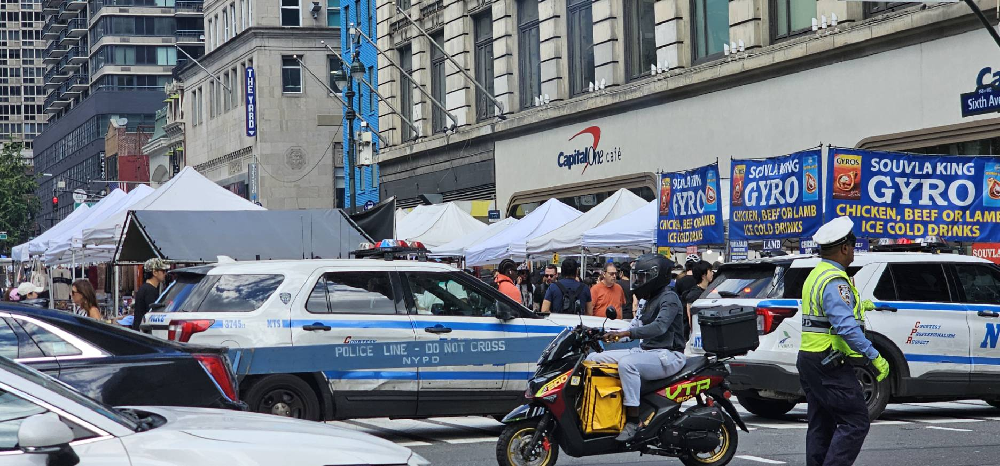
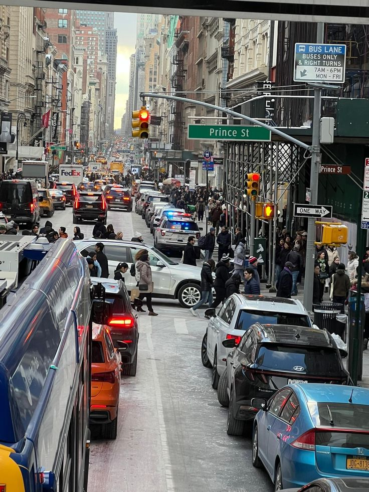
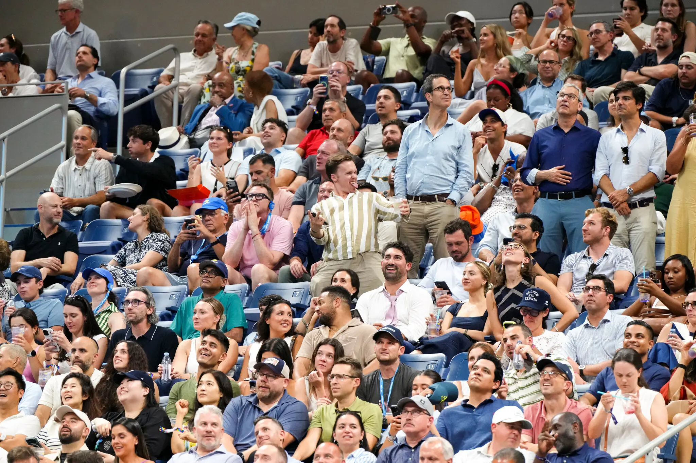
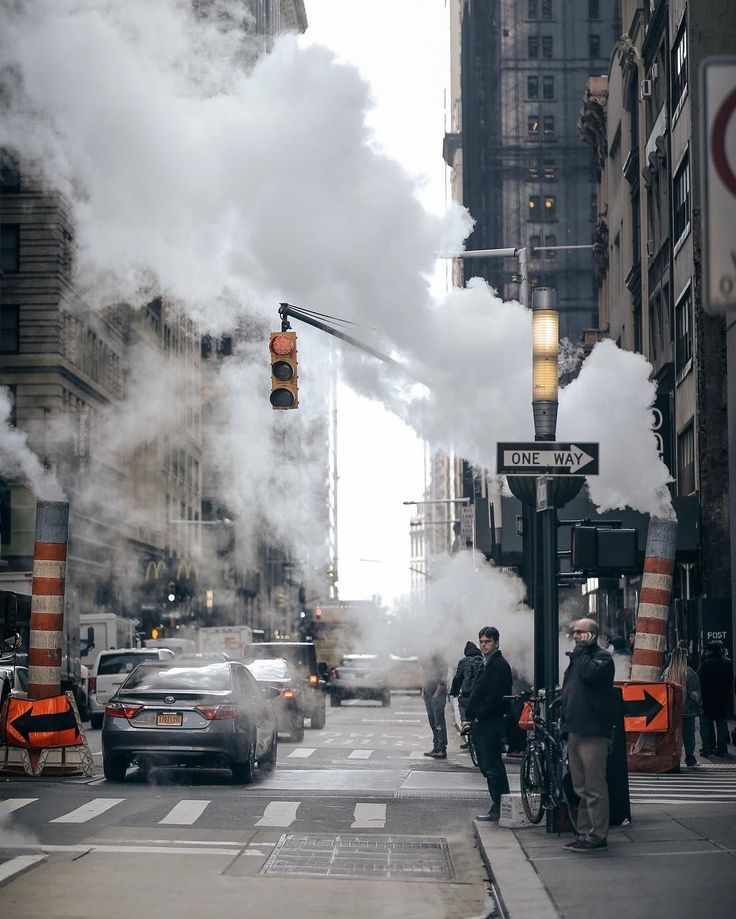

Problems Caused by Crowding
Environmental Issues and Traffic Congestion

Traffic Congestion
The constant movement of people and vehicles through New York City creates significant pressure on its streets
and transportation system.The large number of residents, commuters, tourists, delivery vehicles, taxis, and other
forms of transportation creates heavy demand for the city's limited road space. When too many vehicles try to use
the same streets at the same time, traffic slows down and congestion occurs.Especially in busy areas of Manhattan,
where large numbers of people travel for work, shopping, tourism, and entertainment.
Other than the traffic problem, the environmental pollution, including noises and vehicle gas emission, are also
the risks associated with NYC’s crowding.
Parking Problems
New York City’s parking problem illustrates how crowding is not only a matter of population density, but also a
problem of limited urban space. The return of large parking-violation stickers in August 2026 highlights the difficulty
of managing curb space in a city where many different activities compete for the same streets. Under alternate-side
parking rules, vehicles must move during scheduled street-cleaning periods so that sanitation crews can access the curb.
However, when drivers fail to move their cars, street sweepers can be blocked from cleaning effectively, sometimes
forcing them to drive around parked vehicles or into the middle of the street. This situation demonstrates how a
relatively small amount of physical space must accommodate multiple urban functions, including parking, traffic,
street cleaning, deliveries, and public transportation. NYC DOT also notes that illegally parked vehicles can contribute
to congestion and safety problems. Therefore, parking can be understood as one part of the broader crowding problem in
New York City: as more people, vehicles, and activities compete for limited street space, conflicts over how that space
is used become increasingly visible. The parking-sticker policy represents one attempt to manage this competition by
encouraging drivers to move their vehicles when the street needs to be used for another purpose.

Environmental Pollution
The 2026 U.S. Open has seen a significant increase in the presence of social media influencers and content creators. Around 100 influencers received credentials for the tournament, compared with 54 in 2025, as organizers seek to introduce tennis to new audiences and expand the event’s presence on social media. However, the growing presence of influencers has also created conflicts with the traditional experience of watching tennis. Some content creators have been criticized for filming themselves, talking during matches, and using equipment such as ring lights, which can distract players and other spectators. While social media can help the U.S. Open reach a wider audience, the situation raises questions about how different groups should share the same event space and how the experience of a major sporting event is changing in the social-media era.
Connection to NYC’s Crowding
The News from the U.S Open provides an example of how crowding can involve more than simply having a large number
of people in one place. As major events such as the U.S. Open attract spectators, athletes, media, influencers,
and content creators, the same physical space must accommodate people with different purposes and expectations.
Spectators want to watch the matches, while influencers may also use the space to create photographs and videos
for online audiences. This creates competition not only for physical space but also for attention and access to the event.
In this sense, the U.S. Open illustrates a broader aspect of crowding in New York City: as more people and activities
occupy the same limited spaces, the challenge is not only the number of people, but also how different uses of the space
interact with one another.

Other Environmental Issues
Newly released city records include evidence of asbestos, benzene, heavy metals, and other pollutants, with some measurements exceeding acceptable limits. These findings raised renewed concerns about whether residents and workers were adequately informed about environmental risks.
